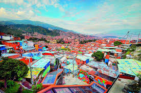
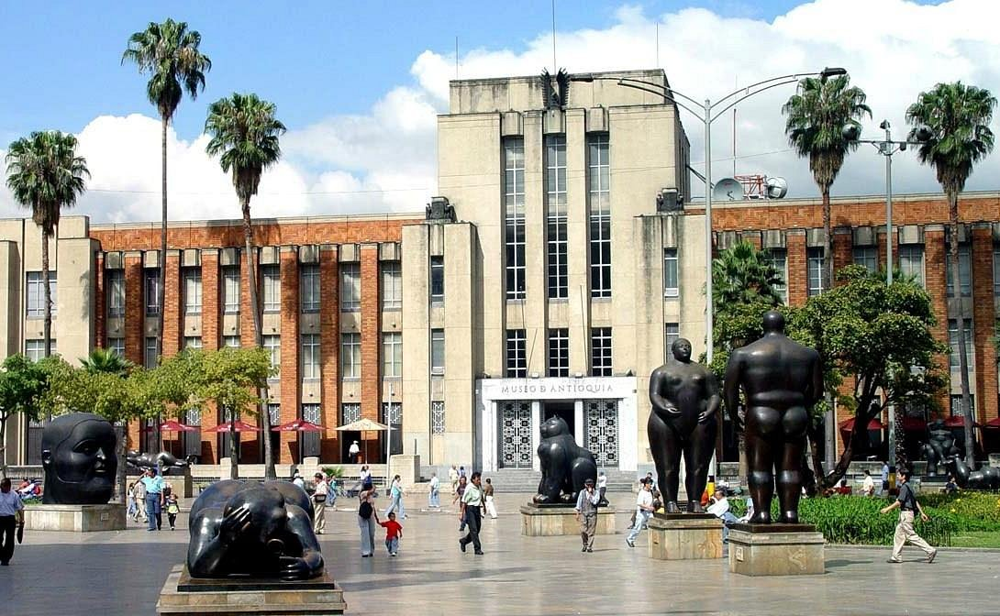

Medellín: Ciudad de la Eterna Primavera

Descripción
Medellín, la innovadora ciudad en el Valle de Aburrá, es conocida por su clima agradable, flores y ambiente festivo. Es un destino ideal para explorar arte urbano y disfrutar de la vida nocturna.
Puntos Turísticos


Actividades Recomendadas
- Explorar el Parque Arví y realizar actividades al aire libre.
- Tomar el Metrocable para disfrutar vistas panorámicas de la ciudad.
- Disfrutar de la vida nocturna en el barrio El Poblado.